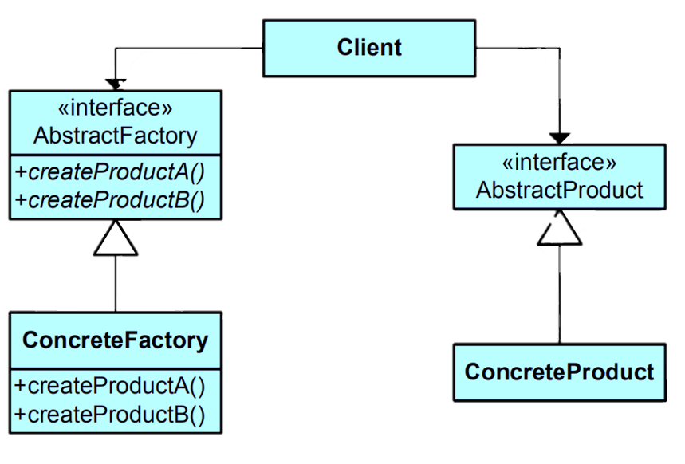

The Abstract Factory pattern is a design pattern in software engineering that provides an interface for creating families of related or dependent objects without specifying their concrete classes. It's one of the creational patterns and is used when a system must be independent of how its objects are created, composed, and represented.Learn more.
Key Characteristics
Key characteristics of the Abstract Factory Method pattern include:
Interface for Object Creation: The pattern introduces an abstract factory interface that declares a set of creation methods for creating related objects. Each method corresponds to a "product" or object family.
Multiple Implementations: Concrete subclasses of the abstract factory interface provide implementations for creating different variations of related objects, forming different "families."
Decoupling: This pattern promotes loose coupling between the client code and the specific classes of objects being created. The client code only interacts with the abstract factory and product interfaces.
Dependent Object Families: The Abstract Factory pattern is particularly useful when you need to create objects that are part of a larger family or system and are dependent on each other.
Consistency: The Abstract Factory pattern ensures that objects created by a factory are consistent and compatible with each other, as they belong to the same family.
Class Diagram

Example
Let's consider a scenario where you're building a game that runs on multiple platforms (e.g., Windows, macOS) and supports different types of UI elements (e.g., buttons, menus) specific to each platform. You want to use the Abstract Factory pattern to create UI elements that are compatible with their respective platforms.